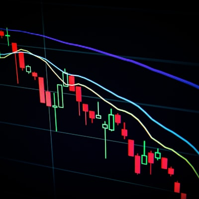

นิยาม ความหมายของ Impact & Investment
ทำความเข้าใจแนวคิดและมิติผลประโยชน์
นิยาม Impact
การวัดผลการใช้ประโยชน์ที่เกิดขึ้นจากงานวิจัย ในการสนับสนุนและขับเคลื่อนทั้งภาคการเกษตร ภาคอุตสาหกรรม และชุมชน นำไปสู่ขยายผลสู่การใช้ประโยชน์และสร้างให้เกิดมูลค่าเพิ่มต่อประเทศในด้านเศรษฐกิจ สังคม และสิ่งแวดล้อมได้
มูลค่าทางเศรษฐกิจ
มูลค่าผลลัพธ์ผลกระทบที่ส่งผลต่อระบบเศรษฐกิจของประเทศ ทั้งทางตรงและทางอ้อม
หลักการประเมิน
นับมูลค่าผลลัพธ์ผลกระทบจากโครงการและกิจกรรมทั้งที่สิ้นสุดแล้วและที่ยังดำเนินการอยู่ โดยประเมินเฉพาะสิ่งที่เกิดขึ้นแล้วจริง ไม่ใช่การคาดการณ์
พิจารณาถึงความแตกต่างของผลที่เกิดขึ้นก่อนและหลังการดำเนินโครงการ (Before & After) โดยรายงานเฉพาะมูลค่าส่วนต่างที่คำนึงถึงบทบาทการมีส่วนร่วมแล้วเท่านั้น
ประโยชน์ของ Impact ถือเป็นความสำเร็จที่แสดงถึงความมีคุณค่าของผลงานวิจัย และที่สำคัญคือเพื่อนำข้อมูลไปประกอบการของบประมาณในแต่ละปี
มิติผลประโยชน์
กำไร/รายได้เพิ่ม
ลดค่าใช้จ่าย/
ลดต้นทุน
ลดการนำเข้า

Financial Proxy
(ค่าตัวแทนทางการเงิน)
- เพิ่มประสิทธิภาพการทำงาน
- ลดความเสี่ยงในการสูญเสีย/ป้องกันความเสียหาย
- ลดค่าเสียโอกาส
- คุณภาพชีวิตดีขึ้น
- ทักษะความรู้เพิ่มขึ้นจากการอบรม/ประกวด
นิยาม Investment
เป็นการนับเงินลงทุน (ในประเทศ) ที่เกิดจากค่าใช้จ่ายในกิจกรรมทางวิทยาศาสตร์และเทคโนโลยี เพื่อสร้างมูลค่าเพิ่มในภาคการผลิต ภาคบริการ และภาคเกษตรกรรมที่จะเกิดขึ้นใน 2 รูปแบบ
เงินไม่เข้าระบบบัญชี สวทช.
นับรวมมูลค่าการลงทุนเพิ่มของภาคการผลิต ภาคบริการ และภาคเกษตรกรรม ที่เงินไม่อยู่ในระบบบัญชีของ สวทช. แต่ สวทช. มีส่วนร่วมทำให้เกิดการลงทุนในประเทศ
เงินเข้าระบบบัญชี สวทช.
นับรวมมูลค่าการลงทุนเพิ่มของภาคการผลิต ภาคบริการ และภาคเกษตรกรรม ที่เงินเข้าในระบบบัญชีของ สวทช.
ประโยชน์ของ Investment แสดงให้เห็นว่า สวทช. สามารถนำ ว และ ท ไปประยุกต์ใช้ในภาคการผลิต ภาคบริการ และภาคเกษตรกรรมได้อย่างมีประสิทธิผล ก่อให้เกิดความเชื่อมั่น และทุกภาคส่วนเพิ่มการลงทุนในกิจกรรมทาง ว และ ท สามารถสร้างมูลค่าเพิ่มในผลผลิตและบริการ รวมทั้งเพิ่มความสามารถในการแข่งขันของประเทศ
ประเภทของ Investment
Income
ดึงจาก PABI อัตโนมัติการลงทุนเพิ่มที่เงินเข้าในระบบบัญชี สวทช. (รายได้จากโครงการวิจัยพัฒนาและการบริการต่าง ๆ)
In-kind
งาน PABS รายงานบน myImpactการลงทุนในลักษณะที่ไม่อยู่ในรูปตัวเงินและ/หรือเงินไม่เข้า สวทช. ที่เกิดขึ้นจากการทำงานร่วมกับ สวทช.
Investment จากการถ่ายทอดเทคโนโลยี (TT)
งาน ERMS รายงานบน myImpactจากการกระตุ้นให้ภาคการผลิต ภาคบริการ และภาคการเกษตรมีกิจกรรม ว และ ท เกิดความเชื่อมั่นและเพิ่มการลงทุนในมิติต่าง ๆ เพื่อสร้างมูลค่าเพิ่มในผลผลิตและบริการ